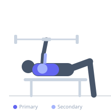
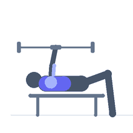

Exercise guide / Dumbbell Bench Press
Dumbbell Bench Press
The dumbbell bench press is a horizontal pushing exercise performed on a flat bench using independent dumbbells. The free movement of each arm allows a greater range of motion than the barbell version and helps identify and correct left-right strength imbalances. It is excellent for developing pectoral size and symmetry.
Primary muscles
pectoralis major sternal
pectoralis major clavicular
Secondary muscles
deltoid anterior
triceps long head
triceps lateral head
Stabilizers
supraspinatus
infraspinatus
Equipment
Dumbbell (Fixed)
Flat Bench


Starting position
- Sit on the edge of a flat bench holding a dumbbell on each knee. Use your knees to kick the dumbbells up as you lie back. Hold the dumbbells at chest level with palms facing forward and elbows bent at roughly 75 degrees.
Setup
- Choose an appropriate weight. Sit at the end of the bench, place dumbbells on thighs, then use leg drive to bring them into position as you lie back. Keep shoulder blades retracted and depressed throughout.
Steps
- Brace your core and press both dumbbells simultaneously upward and slightly inward until arms are nearly fully extended.
- Lower the dumbbells under control, allowing elbows to drop slightly below the level of the bench for a full chest stretch.
- Pause briefly at the bottom without losing shoulder blade position.
- Press back up, bringing the dumbbells slightly together at the top to maximize pectoral contraction.
Coaching cues
- Bring the dumbbells together at the top to feel the chest contract
- Keep your shoulder blades pinched together throughout the entire set
Breathing
- Inhale as you lower the dumbbells. Exhale as you press them back to the starting position.
Range of motion
- Lower dumbbells until your upper arms are slightly below parallel to the floor. Press to near full extension without fully locking out.
Tempo
- 2-1-1-0
Common mistakes
- Allowing dumbbells to drift too wide, stressing the shoulder capsule
- Losing scapular retraction at the bottom of the movement
- Using an excessively wide elbow flare
Safety
- Drop the dumbbells to the sides if you fail a rep — do not attempt to sit up with heavy dumbbells above your head
- Use a spotter who can support your wrists when training near maximum effort
Training
- strength: 4–8 reps
- hypertrophy: 8–15 reps
- endurance: 15–20 reps
- strength: 3–5 sets
- hypertrophy: 3–5 sets
- endurance: 2–4 sets
- Rest: {'strength': 180, 'hypertrophy': 90, 'endurance': 45}